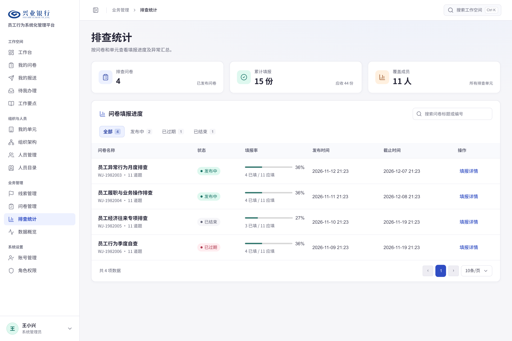
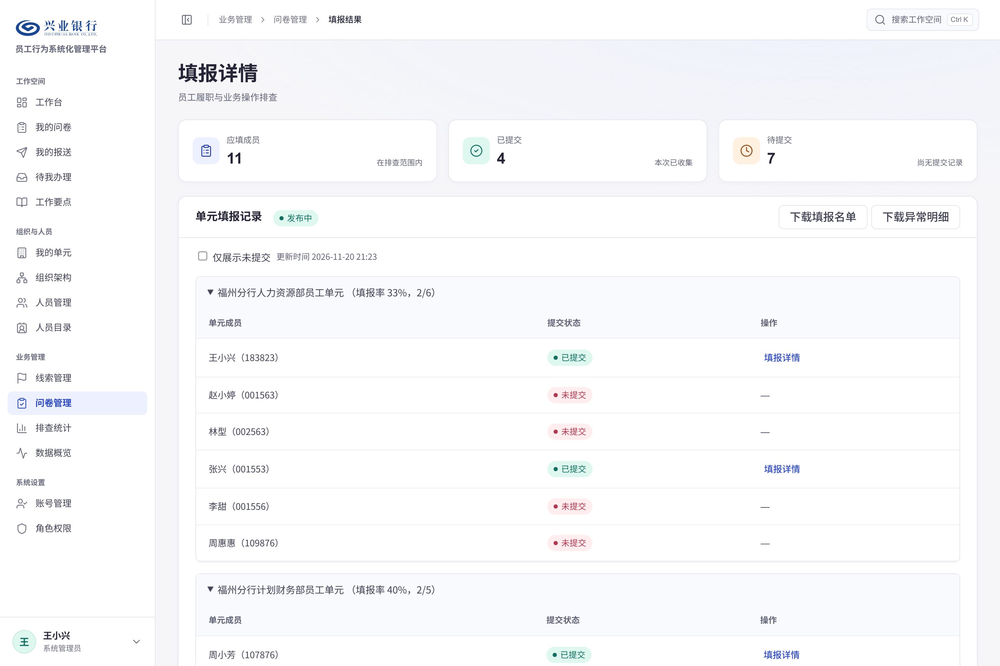
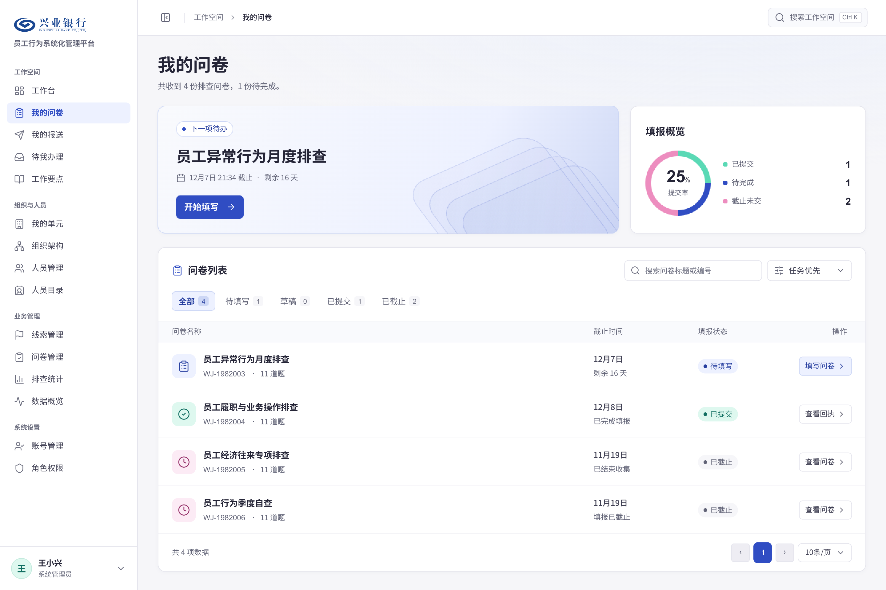

兴业银行 · 人力资源管理系统 — 2022–26
员工行为管理平台
一份问卷明天截止。员工想确认「我交了吗」，单元管理员想知道「还要提醒谁」。我围绕这两个问题，设计了从个人填报到按单元跟进的工作流程。
项目背景
把员工行为排查纳入日常工作
员工行为管理属于兴业集团人力资源体系中的「人事管控」。2022 年 5 月，集团开始按具体业务场景推进人力工作线上化。对行为排查而言，一次任务会经过多个岗位，每个岗位需要的信息都不同。
我的设计范围集中在两条业务线上。一条是定期问卷，从确定填报范围、员工提交，到单元跟进。另一条是日常线索，从员工报送材料、管理员交办，到经办人反馈处理结果。
产品分析
同一份问卷，三种责任
我先梳理每个角色需要做的决定，再确定入口、可见范围和页面上的操作。
- 单元成员
- 哪份快到期了？在「我的问卷」看截止时间，继续草稿，提交后查回执。
- 单元管理员
- 本单元还差谁？从「排查统计」进入填报详情，筛出尚未提交的成员。
- 系统管理员
- 这次排查面向谁？维护人员归属，发布问卷，必要时打开个人答卷核对内容。

功能架构
个人办事和管理工作分别从哪里进入？
我按办事目的组织导航。同一条线索，报送人从「我的报送」查进展，经办人从「待我办理」接手，系统管理员从「线索管理」交办。三个入口指向同一条办理记录。
- 工作空间
- 我今天要办什么？
- 工作台、我的问卷、我的报送、待我办理、工作要点
- 组织与人员
- 这件事归哪个单元？
- 我的单元、组织架构、人员管理、人员目录
- 业务管理
- 业务进行到哪一步？
- 线索管理、问卷管理、排查统计、数据概览
- 系统设置
- 谁能查看或办理？
- 账号管理、角色权限
设计方向
让工作台先回答「现在该办哪件事」
待填数量能说明工作量，还得有一个能打开的任务。我把具体问卷放在「我的待办」，让标题直接通向填写页。「常用操作」单独留给主动发起的工作，例如报送一条新线索。
桌面端给任务列表和单元进度留足空间。手机端把问卷标题、到期信息和填写入口放在一起。两端沿用「草稿」「已提交」等状态，换一个屏幕仍能认出任务走到了哪一步。

设计思维
从「下一步要联系谁」倒推统计页
完成率能回答进度，跟进时却需要具体姓名。我从管理员最后要找的那份名单倒推，把总览、单元和人员连成一条路径。员工收到回执，管理员也能在名单里看到这次提交。
- 看进度填报率旁并列「已填人数 / 应填人数」，交代百分比的分母。
- 找单元打开「填报详情」，按管理范围查看各单元的提交人数和成员名单。
- 定对象勾选「仅展示未提交」得到跟进对象。「未提交」只描述填报进度，行为异常由答卷内容另行核对。


设计手法
让每种填报状态都有对应的动作
在「我的问卷」里，我把状态词和动作配成对。草稿显示「继续填写」，已提交显示「查看回执」，点开就能核对提交时间和回执编号。颜色负责提示，文字说清含义。
进入表单，选择「无异常」即可完成该题。选择「上报异常」时，才展开对象和情况说明。提交时若有漏项，页面定位到第一道未完成题，把提示留在需要修改的位置。

提高效率
少找一次入口，少核对一份名单
- 一次点击进入指定问卷从工作台点击「我的待办」里的问卷标题，直接进入该份问卷的填写页，省去在列表里再找一遍。
- 中断后从草稿接着填员工保存草稿后，下次点「继续填写」即可带回已答内容，接着完成剩余题目。
- 按单元直接得到待跟进名单勾选「仅展示未提交」，页面就列出需要联系的成员，省去手工比对应填和已填两份名单的过程。需要留档时，也可以下载填报名单。